The product and the problem
Mozo is an AI-powered scam protection app by ReasonLabs. Its core job: catch scam texts, fake emails, and phishing links before seniors act on them, and deliver a plain-English verdict instantly. Within that product, Mozo also monitors the dark web for exposed personal data, so users get early warning when their SSN, credit card, or financial information is in the wrong hands.
This case study focuses on what happens after detection. When Mozo flags that a user's data is actively being used for loan and credit fraud, a high-urgency alert surfaces on the dashboard. The user faces a clear choice: act, or ignore it. Getting anxious, non-technical seniors to actually complete the remediation process, through a multi-step flow involving three credit bureaus, is the design problem this case study is about. Detection is solved. The problem is everything that comes next.
My Role
Research, UX flows, wireframing, visual design, design system, prototyping, dev handoff, and ongoing implementation support
Team
1 Product Manager, 5 full-stack engineers. I was the sole designer, no junior, no creative director.
Users
Adults aged 60+ in the US. Non-technical, high anxiety around financial and digital security decisions
Challenge
Design a self-service remediation flow that anxious, non-technical users will actually complete, despite the process being inherently complex
We couldn't fix it for them
This is the central design challenge in the project, and what makes it genuinely difficult. Under FCRA and related financial regulations, Mozo is legally prohibited from acting on the user's behalf. We cannot place a fraud alert. We cannot freeze credit. We cannot dispute a charge. Everything depends on the user completing these steps themselves, with external parties like Equifax, TransUnion, and Experian.
That left us with a design problem that couldn't be solved by automation or clever shortcuts:
Could not reduce the number of steps, every action required explicit user confirmation with an external institution.
Could not pre-fill or submit forms on the user's behalf, each bureau required the user to initiate contact themselves.
Had to handle deep user anxiety, specifically the fear of doing something irreversible and damaging to their own credit.
Had to be completable by someone who may not understand "hard inquiry," "credit freeze," or "fraud alert," and who would rather do nothing than risk clicking the wrong thing.
The question wasn't "how do we make a nice UI?" It was "how do we design something that gets people to complete a difficult, unfamiliar, multi-step process they're afraid of, without being able to do any of it for them?"
There was a second constraint underneath that one. Once a user completes the flow, there's no visible proof. A fraud alert placed with Equifax is intangible. A credit freeze is invisible inside the app. The user does three genuinely difficult things and receives no immediate confirmation that anything changed. Designing felt safety without visible outcome is one of the hardest problems in security UX, and it shaped every copy and layout decision in this flow.
Who we were designing for
Through research sessions and interviews with Mozo's core user base, I built a detailed picture of what drives action and what causes abandonment. The key finding: for this audience, the fear of doing something wrong is stronger than the fear of the threat itself. Users would rather do nothing than risk clicking the wrong button and making their situation worse. This has a direct implication for layout: anxious users need calm, spacious, one-thing-at-a-time screens. Information density that works for a younger, tech-confident audience is actively hostile here.

Uses email, social media, and basic online banking. Doesn't consider himself tech-savvy. Highly aware of scam risks from peer stories and news. Has a strong sense of personal responsibility around his finances, which is exactly what makes inaction feel safer than the wrong action.
Core fears
Making a mistake that permanently damages his credit. Clicking something he cannot undo. Being embarrassed by not understanding what's being asked. Starting a long process he might not finish.
What enables action
Clear reassurance that existing accounts won't be affected. Knowing upfront how many steps there are and how long it takes. Visible progress. Having a way to get help if he gets stuck.
Where competitors fall short
Before exploring solutions, I mapped the post-detection experience across the three leading competitors in the credit and identity protection space. The gap I was looking for wasn't detection quality, it was what happens in the moment a user learns they have a problem and needs to act. That's where Mozo had the clearest opportunity to differentiate.
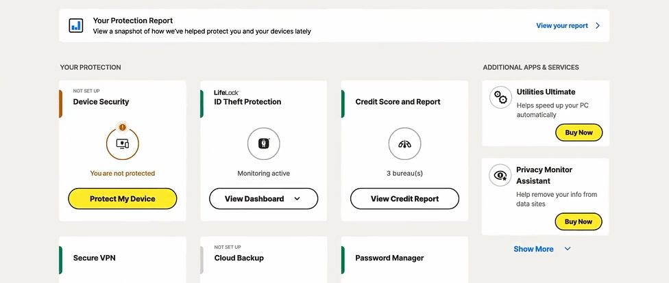
Strong monitoring coverage. When a threat is detected, users are redirected to support channels or external links without a guided path. For a senior user, this reads as: "we found a problem, now go figure it out yourself." High abandonment at exactly the highest-stakes moment.
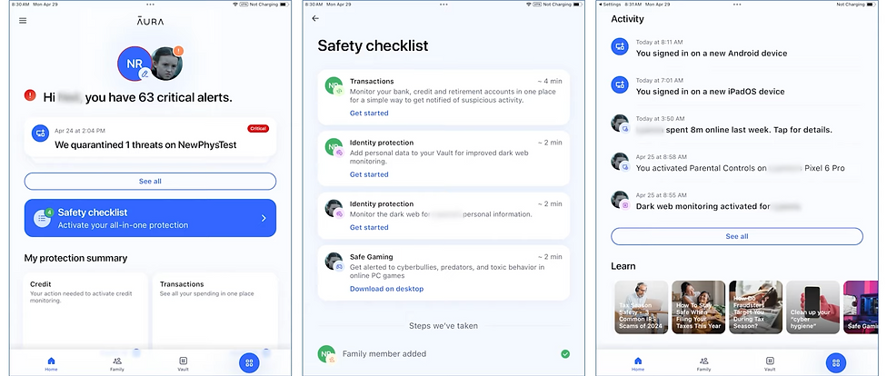
Clean UI and strong automation. But heavy reliance on background processes means users have little visibility into what's actually happening. When recovery requires user action, there's no step-by-step guidance. The product feels opaque precisely when clarity matters most.
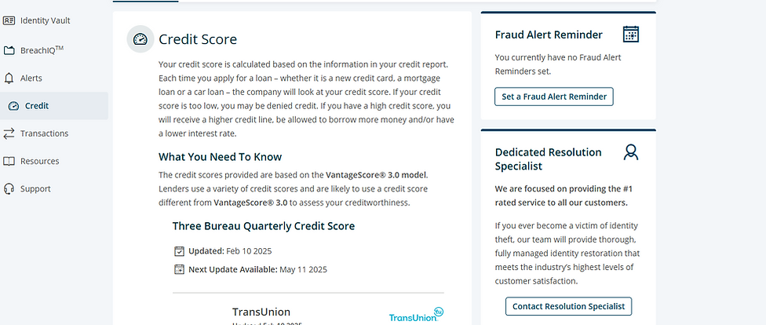
Detailed and informative, but cognitively demanding. Multiple action paths, long explanations, no clear progress states. For non-technical users under stress, more information is not always better. Uncertainty about which step to take next drives abandonment.
What they do well
Broad monitoring coverage and reliable detection. Frequent alerts establish baseline trust and give users a sense of being protected.
Where they fall short
Post-detection guidance is consistently weak. Users are given information but no clear action path. Technical language, invisible progress, unclear completion states.
The opportunity
Guided, step-by-step remediation with plain language and visible progress, designed for the crisis moment, not the calm dashboard browse.
The risk
Well-funded competitors are moving toward full automation. The bet: for this audience, transparent guidance will matter more than invisible automation they can't see or trust.
Checklist vs. Guided Flow
Early in the process I evaluated two fundamentally different structural approaches. The choice had direct implications for completion rates, cognitive load, and how much confidence the user would feel throughout.
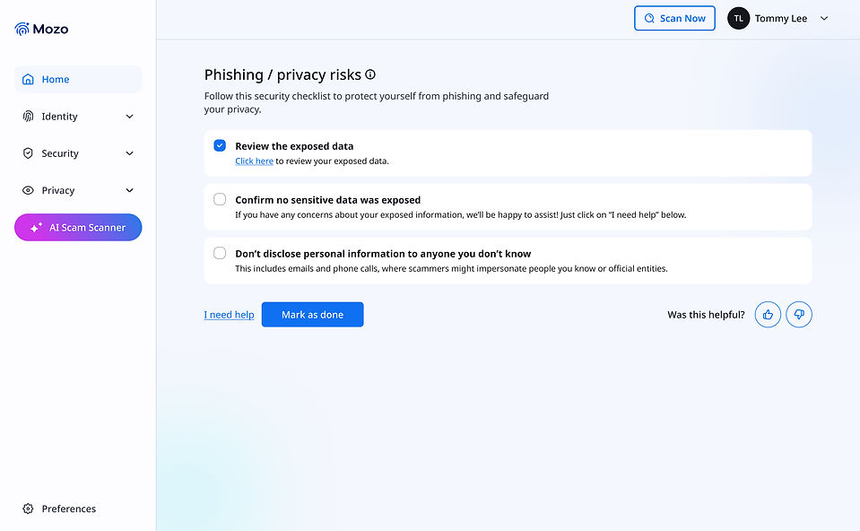
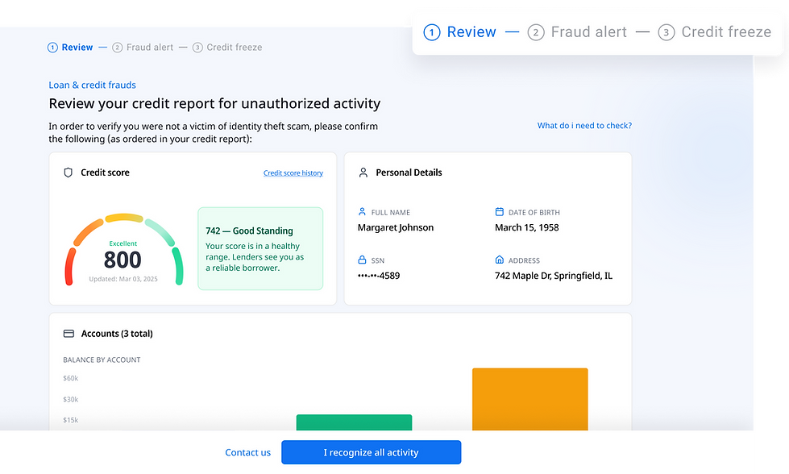
Walking through the full experience
The final design is a 3-step guided remediation flow: Review credit report, Place a fraud alert, Freeze credit with all three bureaus. Below is an annotated walkthrough of each screen, and the design decisions behind them.
The dashboard surfaces the risk without overwhelming
The main dashboard shows the highest-priority active risk prominently. A progress indicator appears if the user has already started the flow. The alert card offers two paths: "Secure my credit" (primary) and "View all risks" (secondary). Both options are deliberate.

All active risks, categorized by type
Before entering the guided flow, users land on a fraud protection overview showing all four active risk types. Each card names the specific exposed data points, SSN, Address, Full Name, Birth Date, that enable that particular fraud type.
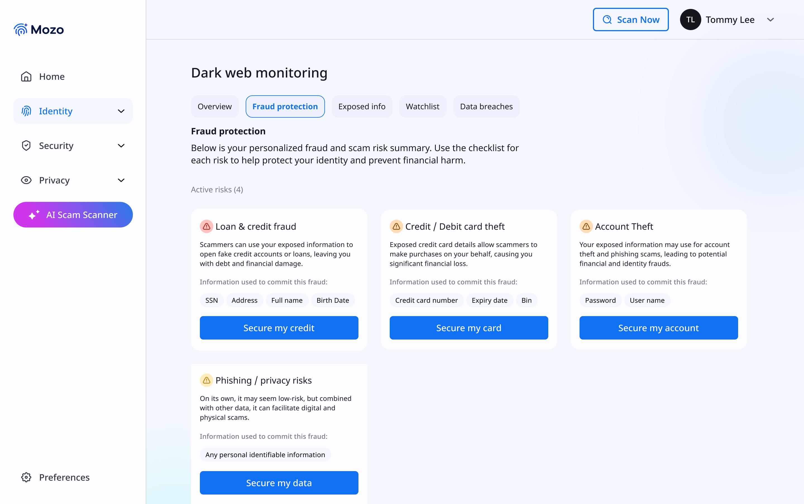
Setting expectations before Step 1 begins
When a user taps "Secure my credit," they don't go straight into the first step. They land on an intro screen that previews all three steps, states the estimated time (15-20 minutes), and, critically, tells them they can pause and return anytime. This screen is not a formality. It is probably the single highest-leverage design decision for completion rate in the entire flow.
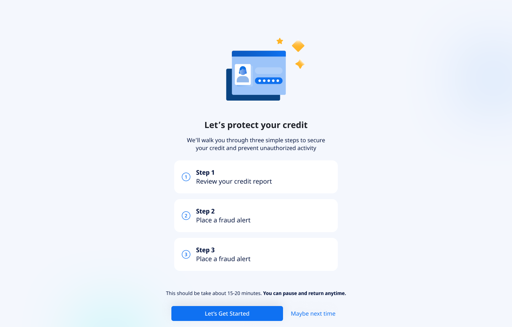
The Equifax credit report, rendered inside Mozo
The actual report data is pulled via the Equifax API and displayed in a structured layout: credit score, personal details, accounts, and credit inquiries. The information is intentionally detailed, users need to identify unauthorized activity, which means seeing real data clearly. The bottom strip asks "Does everything look familiar?" with two paths: confirm, or contact Mozo for support.
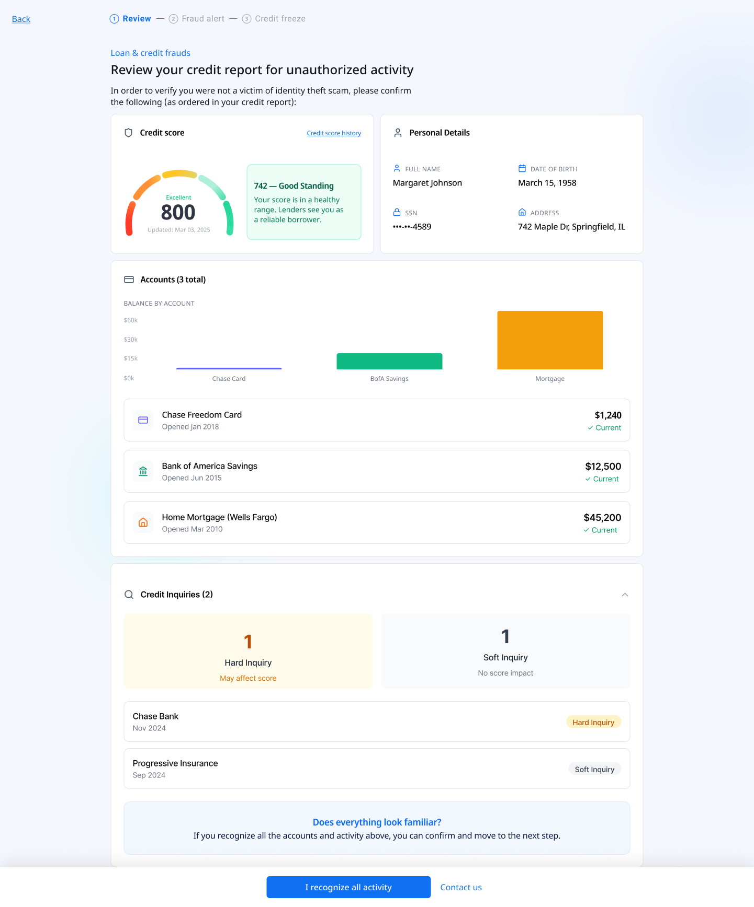
Place a fraud alert: one key piece of copy
Step 2 guides users through placing a free one-year fraud alert. The screen shows all three credit bureaus with two contact methods each: apply online or call. A "Get a call script" link supports users who prefer the phone. The most important element on this screen is not the layout. It is a single callout at the top.
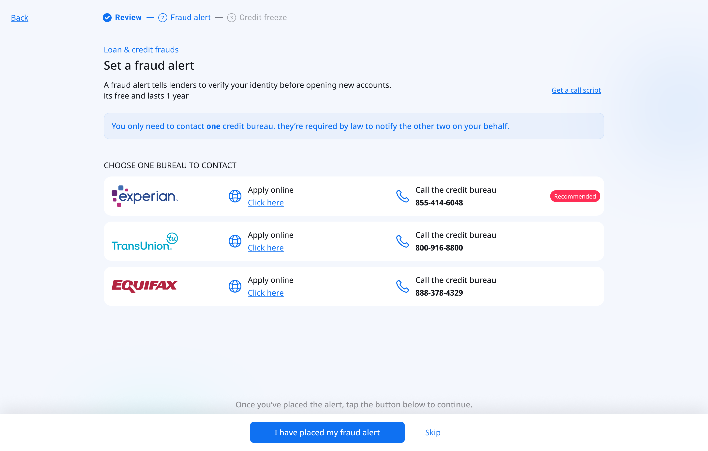
The strongest protection and the most feared step
A credit freeze prevents anyone from opening new accounts in the user's name. It is the most effective protection available, and the step most likely to cause abandonment. Users commonly believe it will lock them out of their own finances permanently. The screen leads with two reassurance callouts before presenting any action: "Your existing accounts are not affected" and "You can lift the freeze anytime."
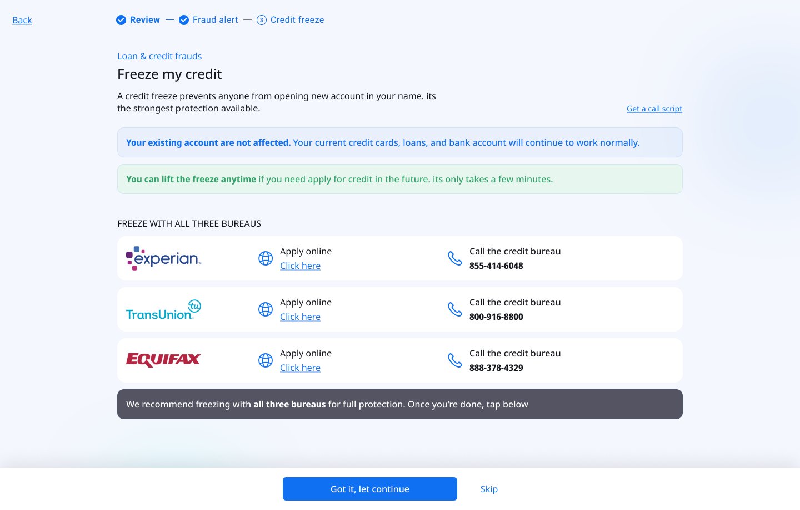
Emotional payoff at the end of a stressful process
After completing all three steps, users reach a celebration screen: confetti, "Your credit is protected," and a summary of everything they completed. For a user who was anxious throughout the entire process, this moment of affirmation makes the experience feel resolved, not just finished. It closes the emotional loop that opened when the threat was first detected on the dashboard.
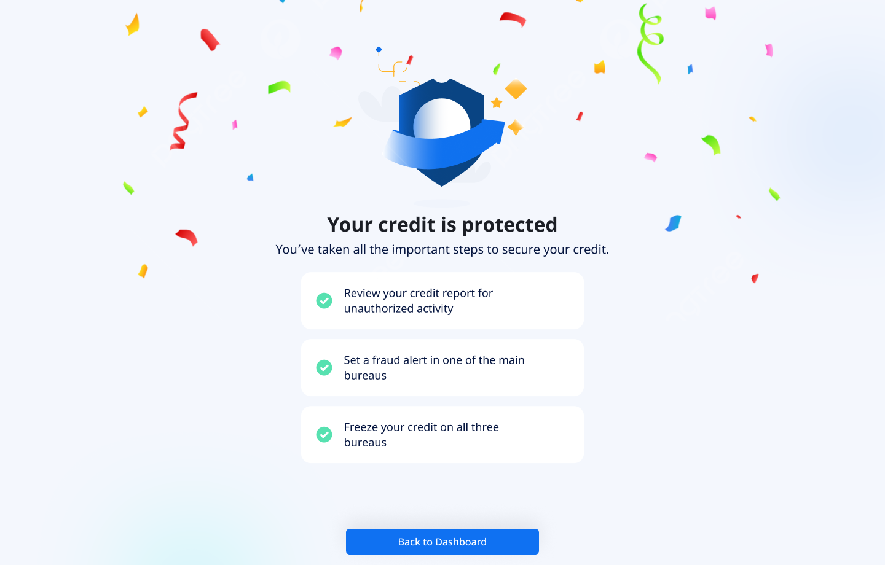
Progress tracked across sessions
The checklist and dashboard both reflect the user's current protection status, whether they completed the full flow, are in progress, or haven't started. Users who completed only part of the flow can return and pick up exactly where they left off. The dashboard shows a percentage-based progress indicator to prompt re-engagement without creating anxiety about what remains.
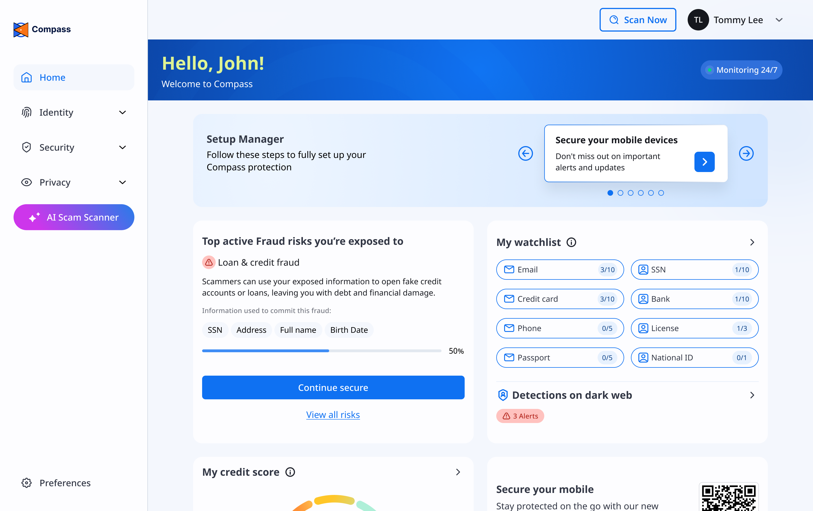
What shipped and what we measured
The flow launched to Mozo's full US subscriber base. We ran three rounds of moderated usability testing with participants aged 58-76, iterating on the reassurance copy, step structure, and information density between each round.
The single highest-impact change across all three testing rounds was the fraud alert copy callout: "You only need to contact ONE bureau." In the version without it, drop-off at Step 2 was more than double. This reinforced something worth noting: copy is UX. A single sentence, grounded in a regulatory fact the user didn't know, had more impact on completion than any layout change.
Completion also has a business dimension. Users who finish the full flow have tangibly experienced Mozo doing something hard alongside them. That felt partnership is a stronger retention signal than any onboarding screen. A user who reaches the confetti screen is not the same user they were before they started.
What I took away from this project
The hardest part wasn't the UI. It was redesigning what "help" means when you're legally constrained from actually helping. We couldn't act for the user, we could only walk alongside them. So the entire design had to feel like having a calm, knowledgeable friend standing next to you: explaining each step, removing objections before they form, and making sure you never felt alone with a problem you didn't understand.
Working solo on this gave me full ownership of every decision, and full accountability for the tradeoffs. The Equifax API integration in particular required close collaboration with engineering: mapping raw API data into a format that a 68-year-old finds reassuring and actionable. That translation work, from technical output to human understanding, is where I think the real value of product design lives.
This project also sharpened how I think about designing under anxiety: every element needs to earn its place by either reducing cognitive load or building confidence. Anything that doesn't do one of those two things is actively working against the user.
It also changed how I think about what "protection" means as a product experience. Mozo's core promise is that users should feel safe, not just be safe. In a scam protection product, most of that value is invisible. It shows up in things that didn't happen: the scam text that got caught, the fake link that got blocked, the credit freeze that held. Designing for felt safety, in a product where the real value is absence of harm, is the design problem that runs through everything Mozo builds.